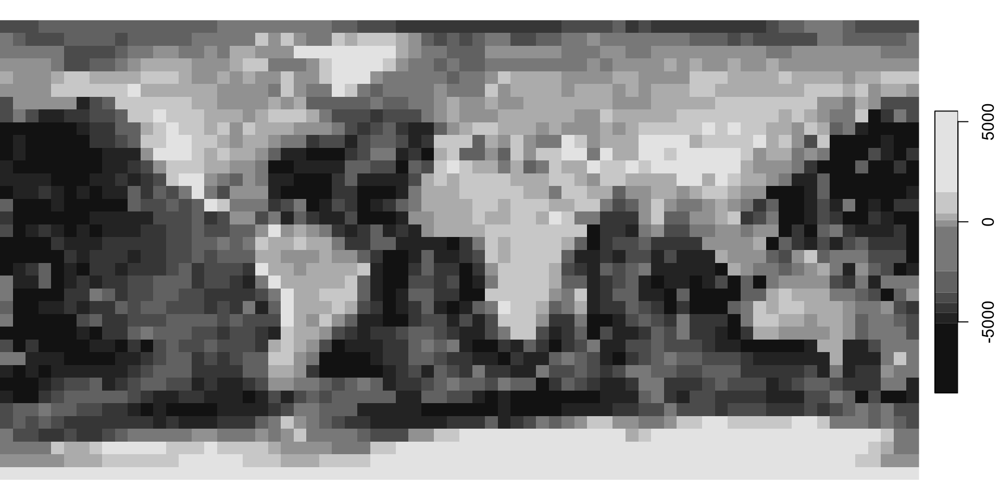
from to offset delta refsys x/y
x 1 72 -180 5 WGS 84 [x]
y 1 36 90 -5 WGS 84 [y]Основы геоинформатики. Лекция 5
Растровая геометрия определяется физическим расположением узлов в пространстве. Распространены следующие виды геометрий:
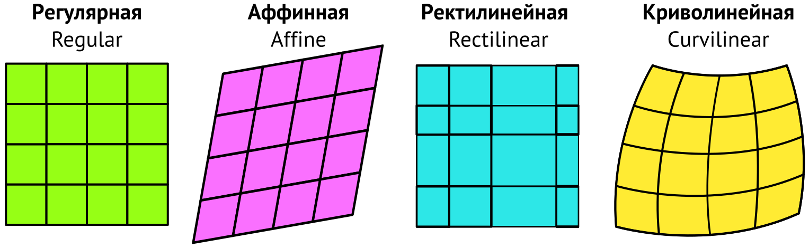
Значения растра хранятся в виде матрицы вне зависимости от геометрии растра.
Измерения растра задают отображение данных на геометрию.
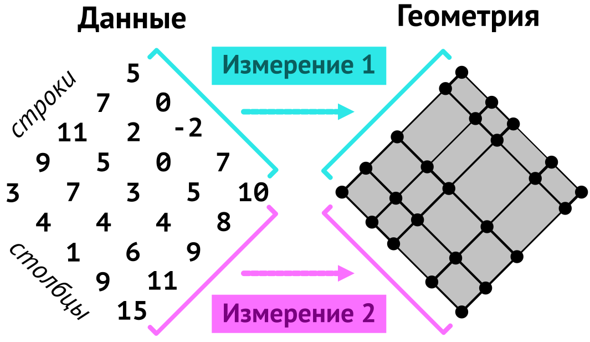
В большинстве случаев измерения 1 и 2 носят названия X и Y, но для аффинных и криволинейных растров они достаточно условны.
Растры, в которых 3 и более измерений, называются растровыми кубами данных.
Измерения растра задают отображение данных на геометрию.
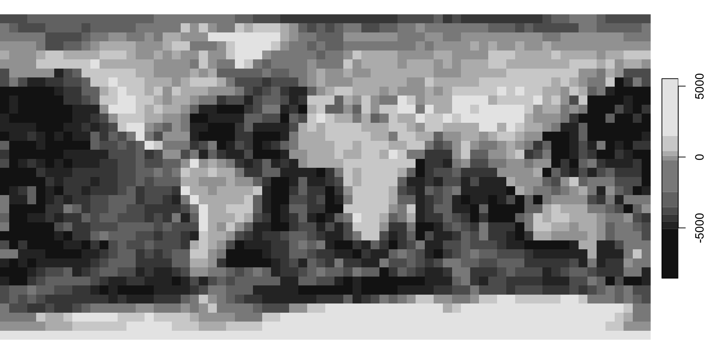
from to offset delta refsys x/y
x 1 72 -180 5 WGS 84 [x]
y 1 36 90 -5 WGS 84 [y]Изменение проекции растра возможно двумя путями
Трансформирует координаты узлов в указанную проекцию. Матрица значений остаётся прежней, однако геометрия становится криволинейной.
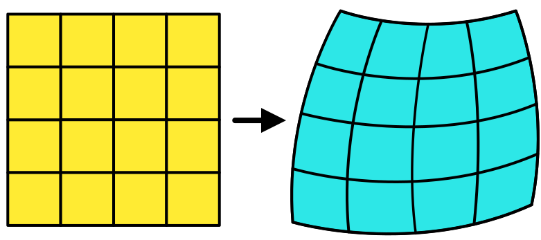
Создает новую регулярную геометрию растра в указанной проекции. Матрица значений пересчитывается, поскольку местоположение узлов изменяется.
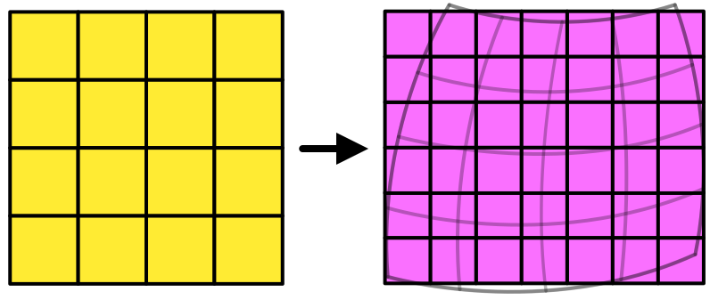
Трансформация приводит к созданию криволинейного растра.
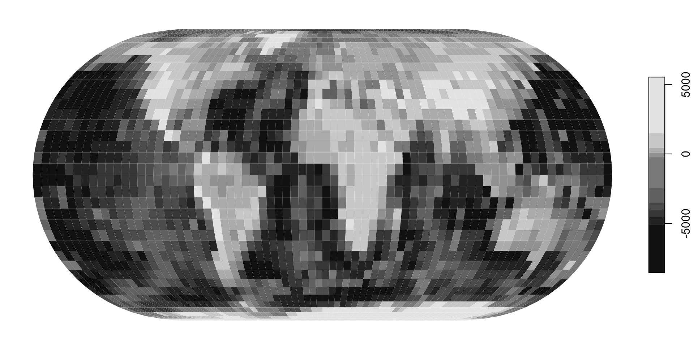
from to refsys values x/y
x 1 72 +proj=eck4 [72x36] -16679857,...,16679857 [x]
y 1 36 +proj=eck4 [72x36] -8446752,...,8446752 [y]
curvilinear gridДеформация обычно осуществляется на регулярный растр.
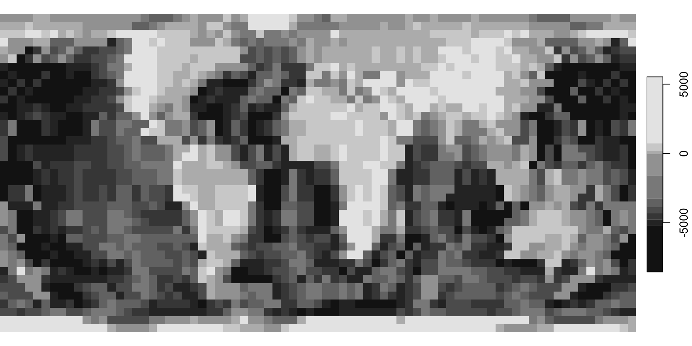
from to offset delta refsys x/y
x 1 77 -16892421 438764 +proj=eck4 [x]
y 1 39 8460601 -433877 +proj=eck4 [y]Передискретизация — изменение пространственного положения узлов растра. Требует пересчета матрицы его значений.
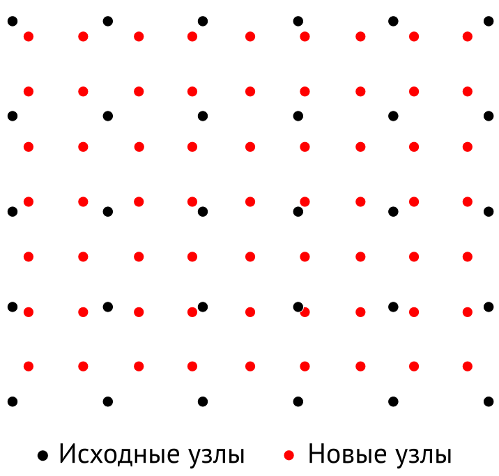
Примеры использования
Переход к более низкому разрешению позволяет уменьшить объем и детализацию данных.
При деформации узлы новой сетки проецируются в исходную проекцию и определяются их значения.
Метод ближайшего соседа — функция покрытия, при которой берётся значение ближайшего узла растра.
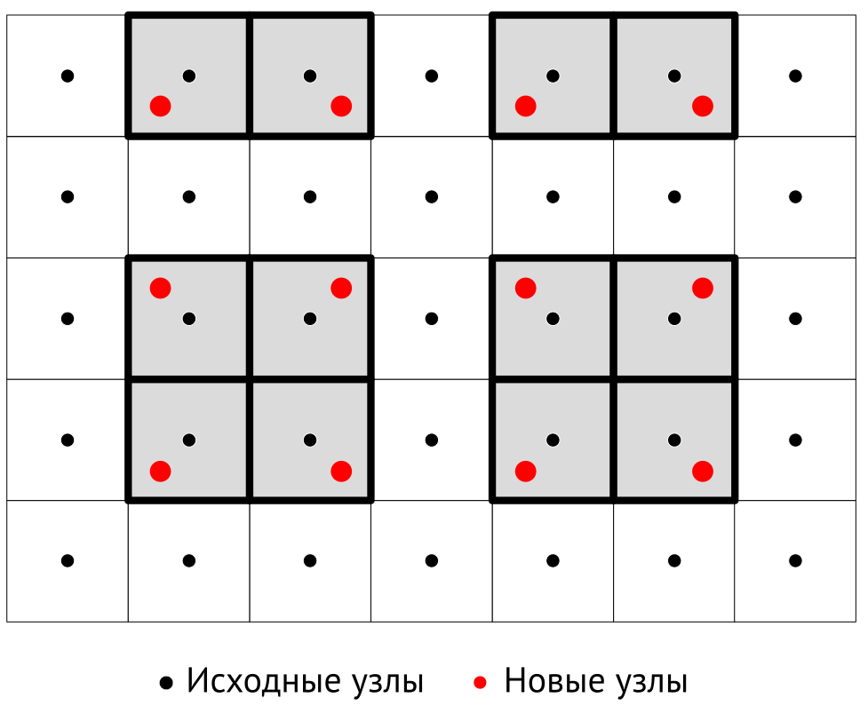
Метод ближайшего соседа используется для категориальных растров, которые хранят данные в номинальных и порядковых шкалах. Например, генезис четвертичных отложений.
Билинейный метод — функция покрытия, при которой значение получается билинейной интерполяцией внутри исходной ячейки.
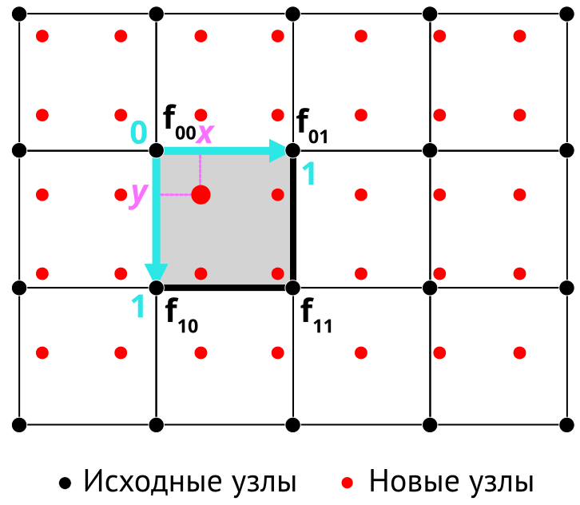
\[f(x, y) = r_{00} + r_{10}x + r_{01}y + r_{11}xy\]
\[\begin{cases} r_{00} = f_{00},\\ r_{10} = f_{10} - f_{00},\\ r_{01} = f_{01} - f_{00},\\ r_{01} = f_{00} + f_{11} - f_{10} - f_{01}. \end{cases}\]
Координаты \(x\) и \(y\) меняются в диапазоне от \(0\) до \(1\) в пределах ячейки.
Локальные операции производят вычисления в каждом узле по отдельности.
На основе растров температур и осадков вычислить индекс засушливости.
Классифицировать растр углов наклона.
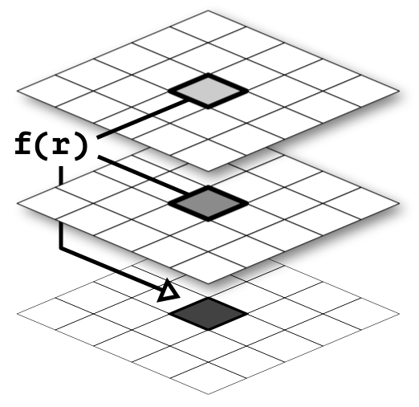
Пример локальной операции — вычисление мощности оледенения.
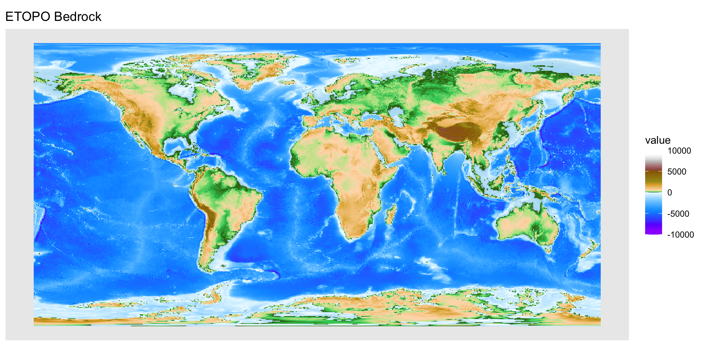
Пример локальной операции — вычисление мощности оледенения.
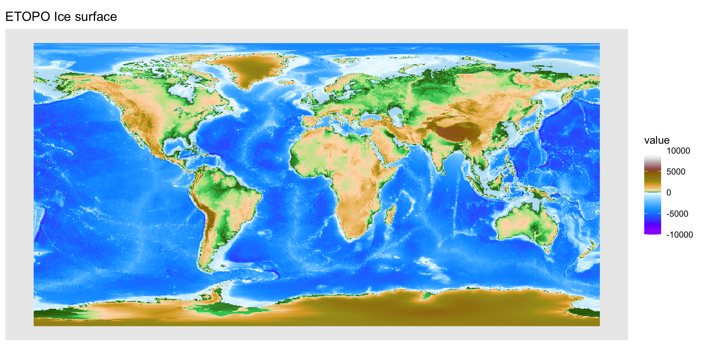
Пример локальной операции — вычисление мощности оледенения.
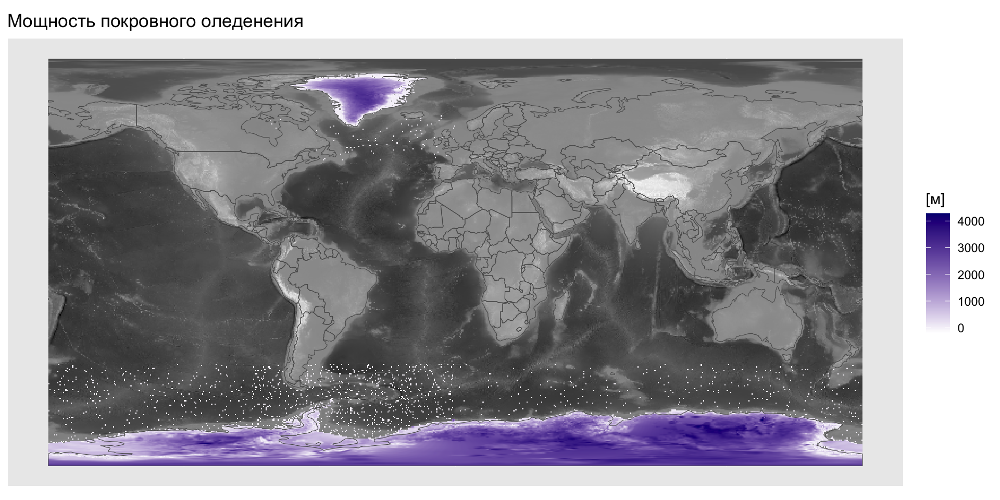
Фокальные операции производят вычисления на основе значений из окрестности каждого узла.
Выполнить фильтрацию (сглаживание) цифровой модели рельефа.
Обнаружить границы (резкие перепады яркости) на космическом снимке.
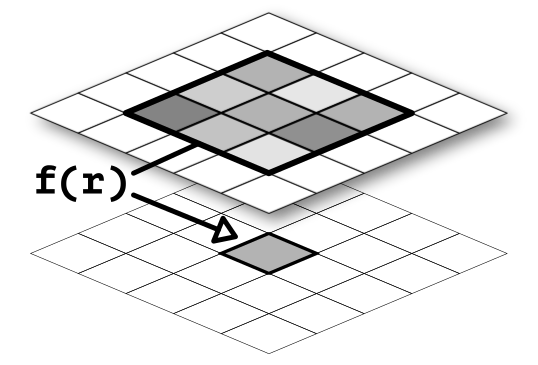
Размеры и форма окрестностей могут различаться.
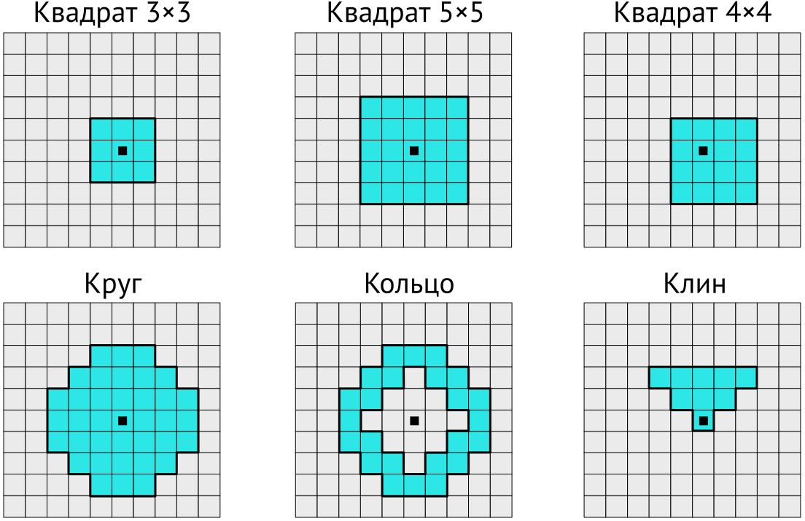
Свёртка — частный случай фокальной операции, в которой значение получается как линейная комбинация значений растра \(R\) с коэффициентами из окрестности \(W\). Для фильтра размером \(3\times3\) значение будет равно \(\sum_{m=1}^3 \sum_{k=1}^3 r'_{mk} \in R'\)
\[ R' = R \circ W = \\ = \begin{bmatrix} r_{11} & r_{12} & r_{13}\\ r_{21} & r_{22} & r_{23}\\ r_{31} & r_{32} & r_{33} \end{bmatrix} \circ \begin{bmatrix} w_{11} & w_{12} & w_{13}\\ w_{21} & w_{22} & w_{23}\\ w_{31} & w_{32} & w_{33} \end{bmatrix} = \\ = \begin{bmatrix} r_{11}\, w_{11} & r_{12}\, w_{12} & r_{13}\, w_{13}\\ r_{21}\, w_{21} & r_{22}\, w_{22} & r_{23}\, w_{23}\\ r_{31}\, w_{31} & r_{32}\, w_{32} & r_{33}\, w_{33} \end{bmatrix} \]
Пример фокальной операции — сглаживание растра методом среднего значения. Получается свёрткой с матрицей \(n \times n\), где каждый элемент равен \(w_{mk} = 1/n^2\):
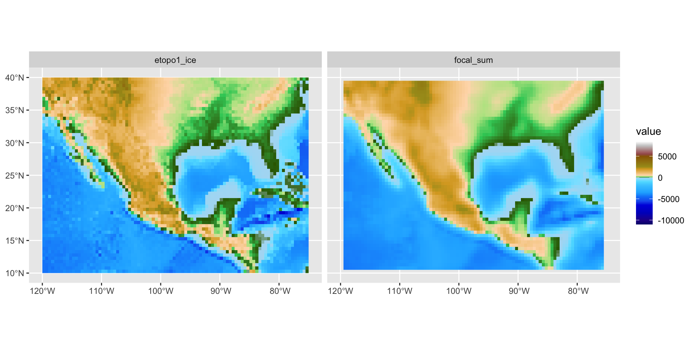
Существуют фокальные операции с нефиксированной (растущей) окрестностью.
Евклидово распределение (Euclidean allocation) относит каждый пиксел растра к ближайшему по расстоянию объекту. Полученный объект является растровой диаграммой Вороного.

Евклидово расстояние (Euclidean distance) создает растр, в узлах которого хранится расстояние до ближайшего объекта.
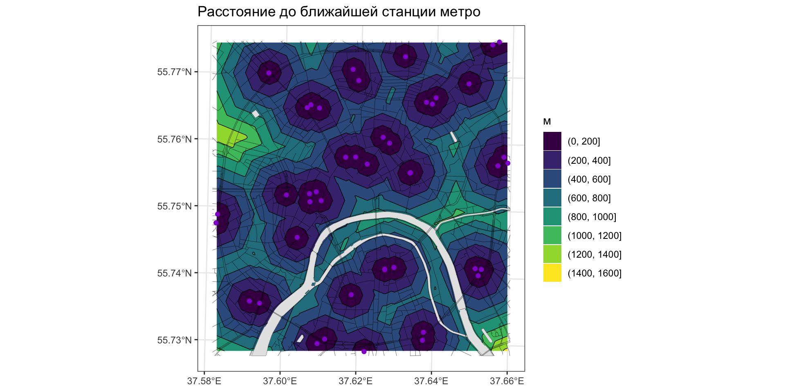
Зональные операции производят агрегирование данных одного растра в пределах зон, определяемых другим растром или векторным набором данных.
Определить наиболее распространенный тип почв в пределах каждого ландшафта.
Вычислить средний угол наклона для каждого водосборного бассейна.
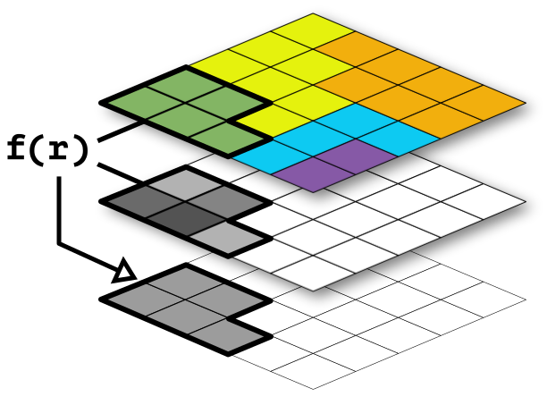
Пример зональной операции — построение климатограммы.
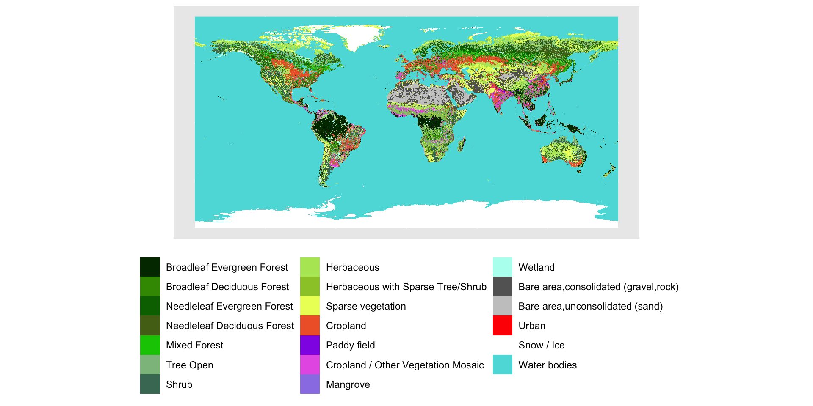
Пример зональной операции — построение климатограммы.
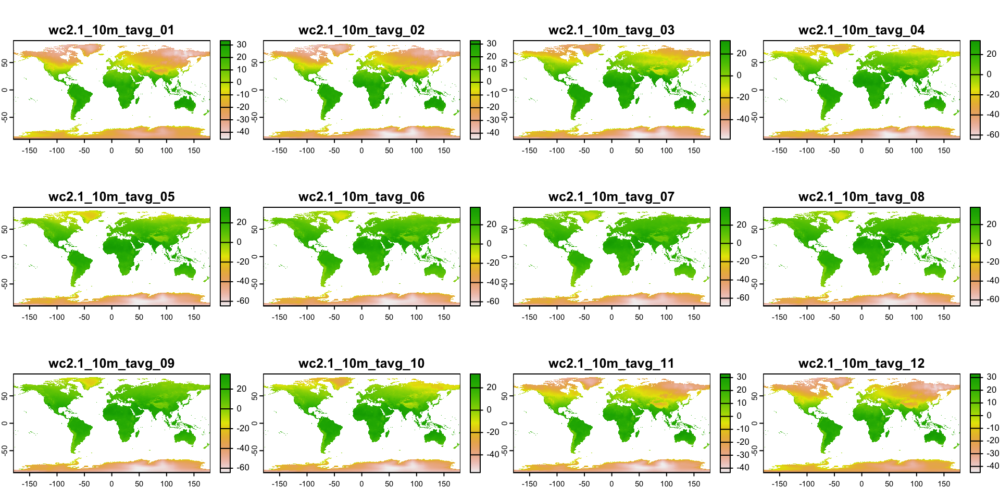
Пример зональной операции — построение климатограммы.
# A tibble: 20 × 3
cover month tavg
<chr> <ord> <dbl>
1 Broadleaf Evergreen Forest Jan 22.5
2 Broadleaf Evergreen Forest Feb 23.1
3 Broadleaf Evergreen Forest Mar 24.0
4 Broadleaf Evergreen Forest Apr 24.7
5 Broadleaf Evergreen Forest May 24.9
6 Broadleaf Evergreen Forest Jun 24.7
7 Broadleaf Evergreen Forest Jul 24.5
8 Broadleaf Evergreen Forest Aug 24.6
9 Broadleaf Evergreen Forest Sep 24.6
10 Broadleaf Evergreen Forest Oct 24.3
11 Broadleaf Evergreen Forest Nov 23.5
12 Broadleaf Evergreen Forest Dec 22.7
13 Broadleaf Deciduous Forest Jan -7.22
14 Broadleaf Deciduous Forest Feb -5.11
15 Broadleaf Deciduous Forest Mar 0.246
16 Broadleaf Deciduous Forest Apr 7.19
17 Broadleaf Deciduous Forest May 13.1
18 Broadleaf Deciduous Forest Jun 17.6
19 Broadleaf Deciduous Forest Jul 19.6
20 Broadleaf Deciduous Forest Aug 18.4 Пример зональной операции — построение климатограммы.
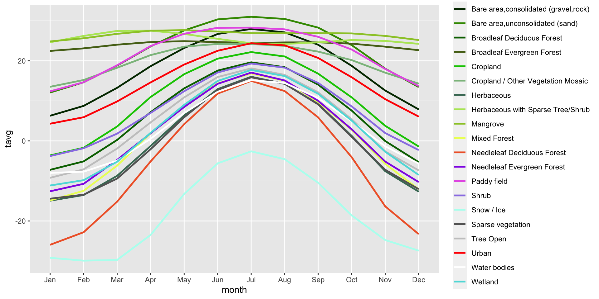
Глобальные операции производят вычисления над всеми узлами растра сразу.
Вычислить среднее значение по растру плотности населения.
Определить наиболее распространенный тип растительности для всей территории.
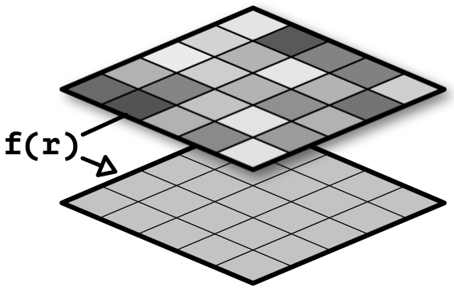
Растровый оверлей — частный случай локальной операции, при котором вычисляется линейная комбинация (сумма, среднее и т.д.) значений из нескольких растров.
\[ R = w_1 r_1 + w_2 r_2 + ...w_n r_n = \sum_{i=1}^n w_i r_i \]
Растровый оверлей называют взвешенным, если коэффициенты в линейной комбинации представляют собой веса значений
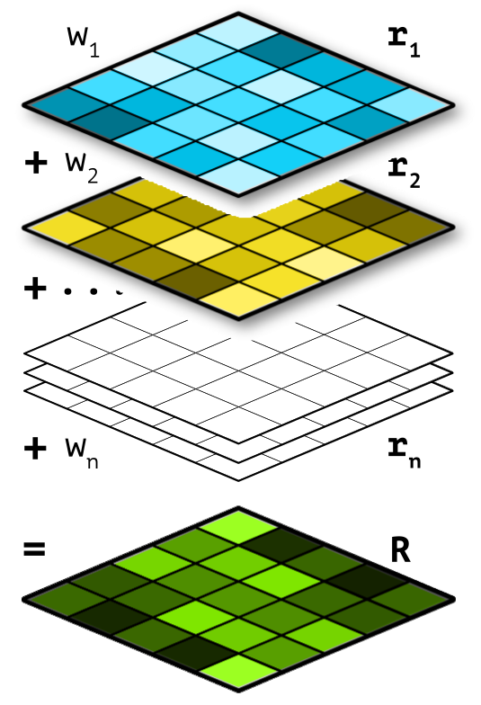
Пример взвешенного оверлея — выбор территорий, обладающей оптимальной совокупностью признаков:
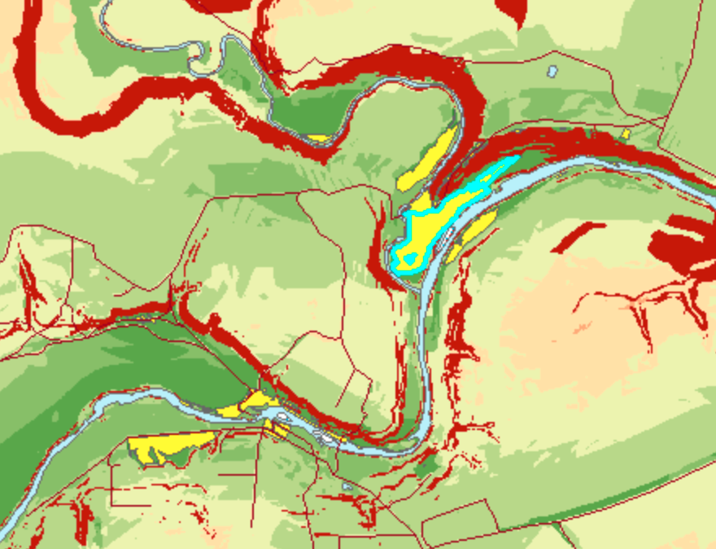
Данные из растра можно извлекать по указанным векторным объектам с помощью функции покрытия. Например, в точке:
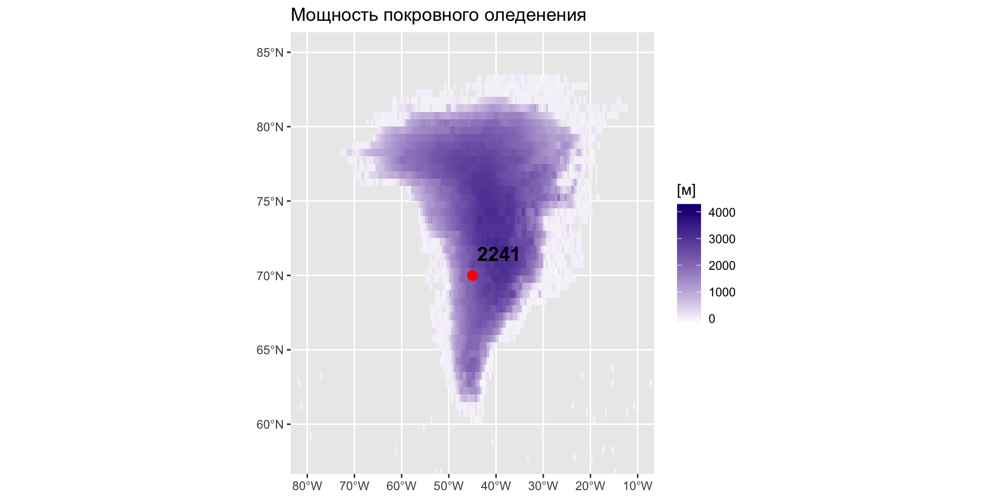
Аналогично выполняется построение профиля, но данные извлекаются из всех ячеек, находящихся на линии профиля.
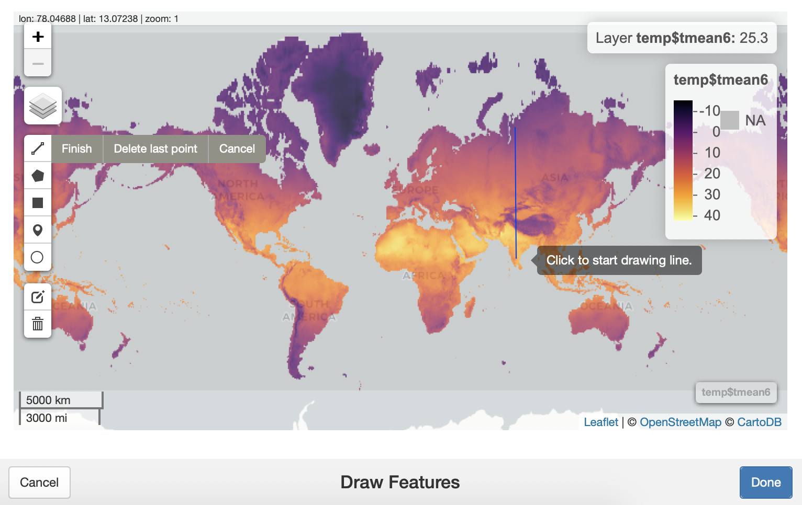
Аналогично выполняется построение профиля, но данные извлекаются из всех ячеек, находящихся на линии профиля.
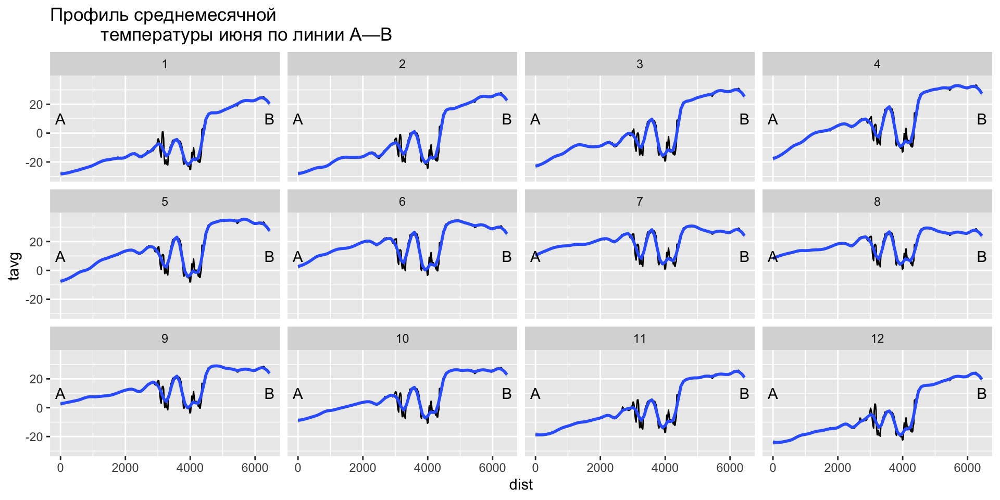
Геометрия растра
Измерение растра
Передискретизация
Ближайший сосед
Билинейная интерполяция
Локальный анализ
Фокальный анализ
Зональный анализ
Глобальный анализ
Окрестность
Свертка
Raster geometry
Raster dimension
Resampling
Nearest neighbor
Bilinear interpolation
Local analysis
Focal analysis
Zonal analysis
Global analysis
Neighborhood
Convolution